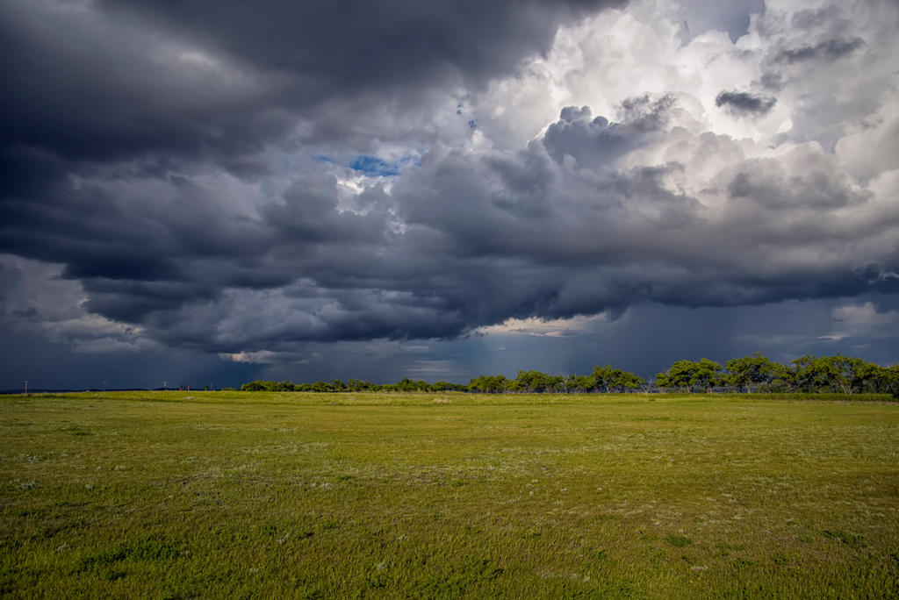
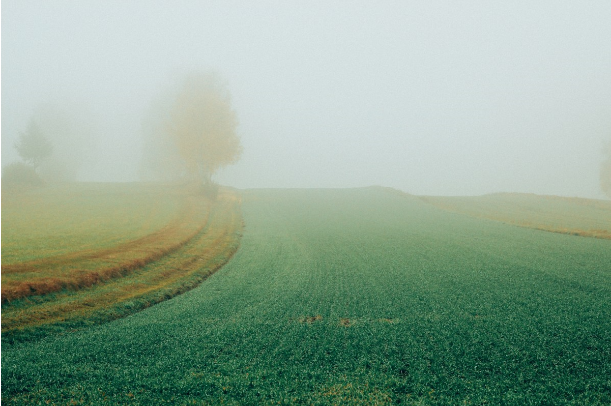
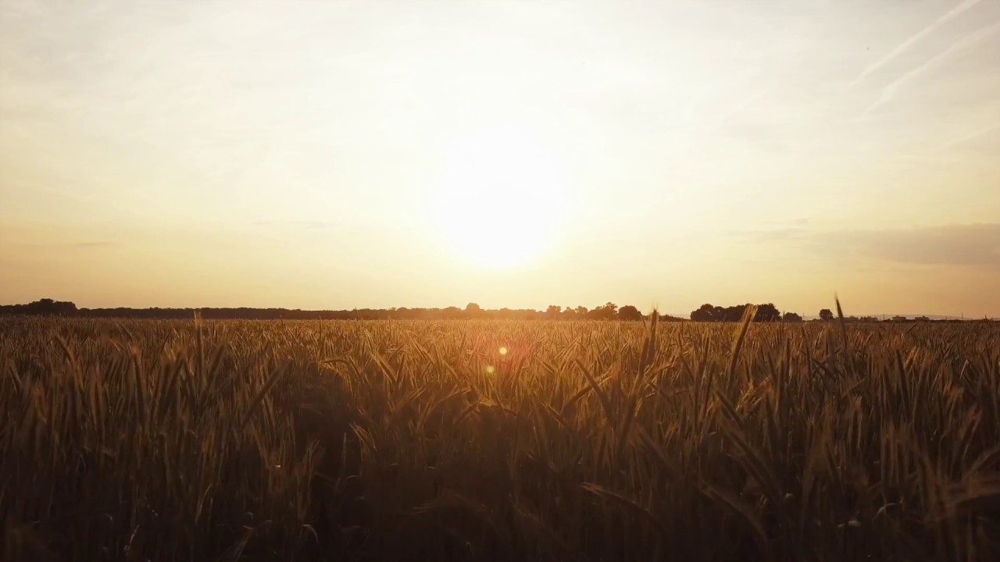

You have selected SANDY SOIL
Select the season for Cultivation:(click the image to select)
Kharif

- Sowing period - July to October
- Harvesting period - September to October
- Also known as Monsoon Crops
- Such crops require a lot of water
- Example: rice, sorghum, maize, tea, rubber, coffee
Rabi

- Sowing period is between October and November
- Harvesting period - February to April
- Also known as Winter Season Crops
- These crops need cold weather for growth
- Example: wheat, oats, barley, pulses, cereals, oilseeds
Zaid

- Sowing period is between March and June (between Kharif and Rabi)
- Harvested by the end of June
- Requires warm & dry weather for growth
- These crops need a longer day-length for flowering
- Example: Seasonal fruits and vegetables